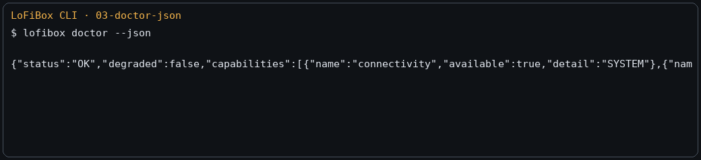

Get Started
Install and Run LoFiBox
LoFiBox Zero is a Linux-first project. The current third-party APT repository is used for installation and testing before LoFiBox enters Debian's official repositories. It publishes Debian trixie packages for amd64 desktops, arm64 Raspberry Pi CM4/CM5 systems, and ARMv6-compatible armhf Raspberry Pi CM0 systems.
1. Add the Preview APT Repository
sudo install -d -m 0755 /etc/apt/keyrings
curl -fsSL https://vicliu624.github.io/lofibox-apt/lofibox-archive-keyring.pgp \
| sudo tee /etc/apt/keyrings/lofibox-archive-keyring.pgp >/dev/null
sudo tee /etc/apt/sources.list.d/lofibox.sources >/dev/null <<'EOF'
Types: deb
URIs: https://vicliu624.github.io/lofibox-apt/debian
Suites: trixie
Components: main
Architectures: amd64 arm64 armhf
Signed-By: /etc/apt/keyrings/lofibox-archive-keyring.pgp
EOF
sudo apt update
sudo apt install lofibox2. Check the Environment
After installation, run doctor first. It checks XDG paths, media roots, playback backend, helpers, cache, credential store, and other baseline runtime requirements.
lofibox version
lofibox doctor
lofibox doctor --json
3. Start an Interface
| Entry | Command | Description |
|---|---|---|
| GUI / X11 | lofibox |
Starts the graphical interface on a Linux desktop or device display. |
| TUI | lofibox tui or lofibox-tui |
Starts the terminal Dashboard for SSH, servers, and developer workflows. |
| CLI | lofibox now --json |
Reads runtime state without entering an interactive interface. |
4. Scan a Library and Play Music
Configure a media root, scan it, search, then play directly or add tracks to the queue.
lofibox config set media.roots '["/home/vicliu/Music"]'
lofibox library scan --incremental
lofibox library status
lofibox search "Outkast"
lofibox play "/home/vicliu/Music/Outkast - Hey Ya!.mp3"
lofibox now --json5. Minimal Remote Source Flow
Remote libraries are split into source profiles, credentials, remote browsing, and stream resolution. Do not pass secrets as command-line arguments by default; use stdin so secrets do not land in shell history or process lists.
lofibox credentials set jellyfin-home --password-stdin
lofibox source add jellyfin \
--id jellyfin-home \
--name "Home Jellyfin" \
--base-url https://media.local:8096 \
--username vicliu \
--credential-ref jellyfin-home
lofibox source probe jellyfin-home
lofibox remote browse jellyfin-home /albums
lofibox remote search jellyfin-home "radiohead"